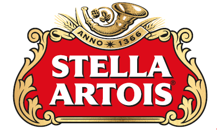
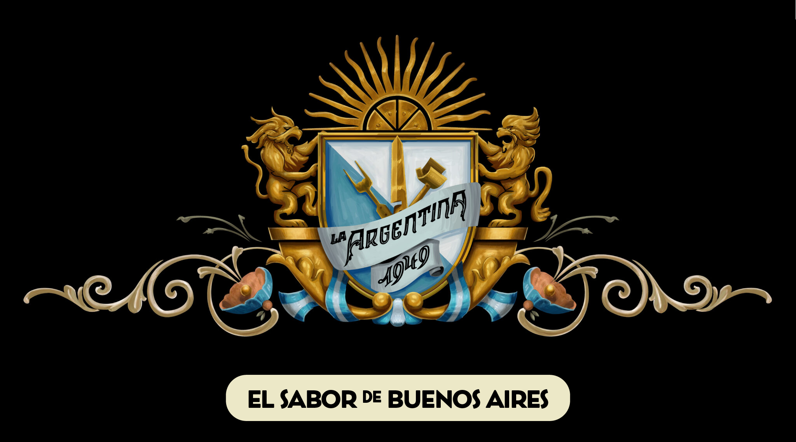
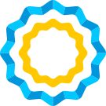

Santiago de Chile · desde 2019
El club de la colectividad argentina en Chile. Fútbol, comunidad y memoria.
Historia
El Club Social y Deportivo Argentino —CSyDA para los de la casa— se fundó en 2019 en Santiago de Chile, como punto de encuentro de la colectividad argentina residente en el país. Lo que arrancó como un grupo de amigos juntando jugadores para un campeonato terminó siendo lo que es hoy: un club con cuatro categorías activas, una sede en remodelación, y una hinchada propia que se reconoce con un grito: Vamos ARGar.
La identidad del club está atravesada por dos cosas que no son negociables: el fútbol bien jugado y el compromiso con la comunidad. Cada Copa D10S incluye una colecta para el Albergue Protege; cada Copa Argentina se celebra como lo que es, una cita con la patria que quedó del otro lado de la cordillera.
Vamos ARGar.
— Grito de la hinchada
Equipos
Fútbol 11 en cancha grande. Categoría DORADA para los maestros. Femenino activo desde el origen. Y una formativa Sub 2009/2010 para los pibes que vienen subiendo.
Fútbol 11. DT: Jonatan Miranda. Capitán: Rama Corbascio.
+35 / oro. Maestros que siguen pisando la cancha.
Activo desde el origen del club, en torneos locales y de la colectividad.
Categoría formativa. Los que vienen subiendo.
Torneo emblema
Es el torneo emblemático del club: un fin de semana en La Serena, hinchada que viaja, equipos amigos que llegan de todo Chile y una colecta solidaria para el Albergue Protege, en alianza con la Municipalidad de La Serena.
El nombre es lo que parece: D10S = Dios + 10. Homenaje a Maradona, homenaje al fútbol como liturgia barrial.
Calendario
Además de la Copa D10S, el club participa en estas competencias.
El barrio
Ocho equipos con los que se juega seguido. Sin cancha no hay club, sin rivales no hay barrio.
Memoria
Cada 24 de marzo el club conmemora el aniversario del Golpe Militar de 1976 en Argentina. No hay club argentino que pueda mirar para otro lado en esta fecha.
Cada 2 de abril, homenaje a los veteranos y caídos en la Guerra de Malvinas. Visitas a "La Casa de D10S" y al mural de Maradona en La Boca, cuando se viaja.
Archivo
El archivo del club vive en Instagram desde 2019. Mientras se migra el export oficial de Meta para tener acá las fotos en alta resolución, dejamos los hitos que marcaron cada temporada.
Nace el Club Social y Deportivo Argentino en Santiago, como punto de encuentro de la colectividad argentina residente en Chile.
Hitos pendientes de aporte por la comisión: primer torneo disputado, primer campeonato, formación de la categoría DORADA y femenino, alianzas con la Municipalidad de La Serena.
Argentina figura como campeón de la VI edición de la Copa de Naciones según el sitio oficial del torneo. A confirmar con la comisión qué selección representó al país.
El club participa en la VIII edición de la Copa de Naciones, en curso en Santiago. Ver fixture y resultados →
Esta grilla mostrará las fotos del archivo cuando se migre el export oficial de Meta. Por ahora, placeholders de color.
Sponsors y partners
Marcas amigas, partners institucionales y locales que sostienen al club.



Argentino, chileno, hincha del fútbol, amigo de la colectividad. La puerta está abierta.
Escribir a presidencia@clubargen.com
Acción social
Lo que se hace fuera de la cancha también es el club.
Albergue Protege — La Serena
Cada Copa D10S incluye una colecta solidaria para personas en situación de calle, en alianza con la Municipalidad de La Serena. Es parte del torneo, no un anexo.
Cajas de alimentos — Escuela Las Nieves
Entregas periódicas de cajas de alimentos a familias de la Escuela Técnica Las Nieves, en alianza con La Protect.